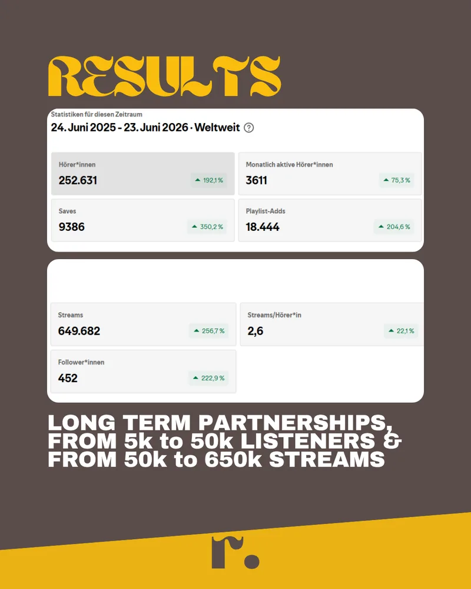
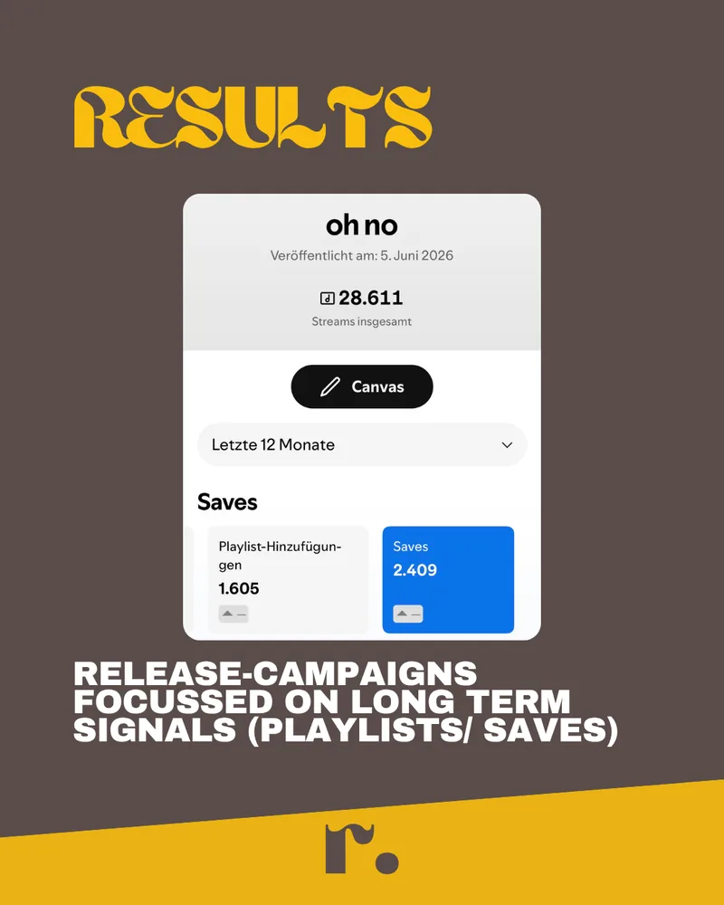
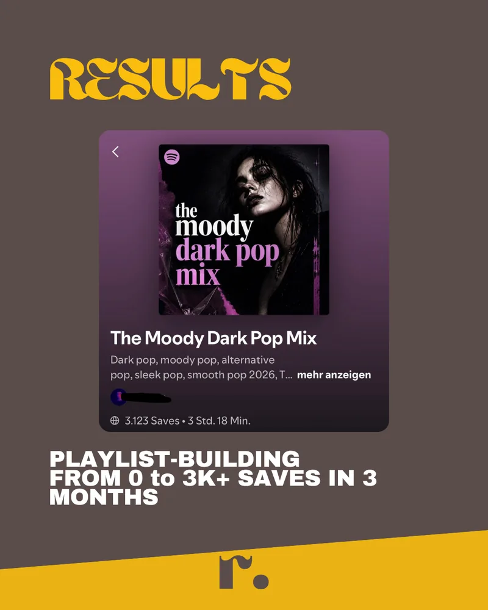

Done-for-you Meta ads for Spotify releases
We run the whole campaign for your release — built around saves, follows and playlist adds. Those are the numbers that make the algorithm keep pushing your song after the budget stops. Streams are what happens afterwards.
Five artists a month. Real listeners only, nothing your distributor can flag — and no guaranteed stream count, here's why that's the point.

Streams for one artist in 12 months — up 256.7%
Growth in saves over the same period
Streams on an artist's first ever release
Playlist saves built from zero in 3 months
If you've run ads before
You put real money behind a release. The numbers moved for a few days. Then they disappeared the moment the campaign stopped.
That's the part that gets people. Not the money. The not knowing what you actually paid for.
The question everyone asks first
Don't take our word for it. This is the one thing you should never take anyone's word for.
Here's what's actually at stake, and it isn't the money. Artists lose songs over this. A distributor flags the streams as artificial traffic. Three weeks later the release is gone, and the profile you'll still be using in five years is carrying it. Cheap promotion is the most expensive thing in this business.
So before you hire anyone — us included — open Spotify for Artists and check three things yourself:
Real people come back. If a campaign delivers thousands of streams and almost as many unique listeners, nobody listened twice. That's traffic, not an audience.
Bots don't save. They don't follow you either. A stream count that climbs while saves stay flat is the clearest tell there is.
Check the cities. If your release is suddenly big in three places with no scene for it and no ad spend pointed there, something is generating it.
Run our numbers through a bot checker if you want. Run your last campaign through one too — plenty of artists find out that way. We'd rather you check than trust us.
No SMM panels. No bought playlist placements. No "streams packages." Every listener comes from a Meta ad shown to a real person who chose to press play. There is nothing in a repeet campaign for a distributor to flag, because there's nothing artificial in it.
Why the crash happens
A stream tells Spotify someone pressed play once. A save tells Spotify someone wants to hear it again.
Only one of those is a signal. Spotify can't decide to push your song before it has a reason to — and a play isn't a reason. A save is. A follow is. A playlist add is. That's the whole difference between a release that spikes & a release that keeps moving three weeks later.
Which means the ad that gets you the cheapest click is the worst ad you can run. Cheap clicks buy you the listener who taps, waits four seconds, leaves. You paid for a number that teaches Spotify nothing. Then you refresh the dashboard on day six and wonder what went wrong.
Nothing went wrong. The campaign did exactly what it was set up to do. It was just set up to buy the wrong thing.
So what happens when you stop paying us? The paid reach stops — that part is honest, it stops for everyone. What stays is the part you actually bought: the people who saved the track, the ones who followed you, the playlists it landed on. Those keep working. That's the entire reason we optimise for them instead of for plays.
Receipts
Straight out of Spotify for Artists. Follower and save curves, not reach estimates.


Leon has helped me out as Marketing Specialist for the release of my first single. It's been incredibly helpful to have him around; he really took the lead in setting up all the required platforms, and he has a lot of knowledge and experience in promoting the song in multiple ways (Meta ads, playlist, SubmitHub, organic content) to trigger algorithmic push on Spotify. He communicated clearly and set realistic expectations.
My expectations were not disappointed; highly professional technically and very patient and helpful with parallel topics like marketing/promo and many other things. Since Leon got involved, my numbers (streams, monthly listeners, followers, etc.) have noticeably increased consistently over a longer period. I'm now looking forward to hopefully many more years of working with Leon.
What we do
You're not learning Ads Manager. You're not writing hooks or building audiences. You send the track — everything below is ours.
We work out who this specific song is for before any money moves. Your existing listener data, the artists you actually sit next to, the interests and behaviours that hold up. Then we build the audience sets to match — and the lookalikes off the people who already saved you.
We produce the ad creatives from your track and your visuals: the video cuts, the hooks, the copy angles. Several of them, deliberately different from each other, so the campaign is testing real ideas instead of one guess in four colours.
The full setup inside your ad account — structure, budget split, tracking and conversion events pointed at saves and follows rather than clicks. Your account, your pixel, your audiences. Everything we build stays with you.
We're in it every day: killing what doesn't convert, scaling what does, swapping creatives before they fatigue, moving budget between audiences. Then you get the numbers that matter — save rate, streams per listener, cost per follower.
How it runs
We listen to the track, go through your profile data, and set the release date with you. Then we tell you who this song is for — the audience we'd put our own money behind.
Ad creatives & copy angles made from your song and your visuals, ready to be tested against each other.
Full build inside your ad account: structure, audiences, tracking, budget split.
We kill what doesn't convert & scale what does. At the end you get the numbers that matter — not a stream count with nothing behind it.
That's our fee. Everything above is included in it.
$500 is the minimum spend that buys enough data to optimise on. Below that a campaign can't learn, and we'd be charging you to guess.
What we won't promise
Here's what we guarantee instead — and why the missing promise is the point.
Every release is different. Every genre is different. A pop single and a techno EP don't cost the same to put in front of the right people, and they don't behave the same once they're there. Anyone handing you a guaranteed number before they've heard the track is guessing.
And a promise like that has to be delivered. When the ads don't reach the number on their own, there's exactly one way left to hit it: bots. You get your screenshot. Your distributor gets a reason to flag the release. That's the trade, every time, and it's why a guaranteed stream count should read to you as a warning rather than an offer.
So we commit to the two things we can actually control:
What every campaign is optimised toward — from real listeners, with the saves and playlist adds that come with them. If we look at your release and can't see a path to it, we'll tell you before you pay.
Every listener from a Meta ad, every number checkable in your own Spotify for Artists. Nothing bought, nothing generated, nothing your distributor can flag.
Honest filter
Who's behind repeet
A producer with 6M+ streams on his own songs, close to 1M on songs he's worked on for clients, and 200+ tracks finished & released.
Leon spent about ten years working this out, at a time when there was almost nothing out there to help — no course, no agency worth hiring, nobody explaining what Spotify was actually reading. He learned it the slow way, release by release, on his own catalogue first and then on other people's.
repeet came out of one thing he kept seeing: good releases dying. Not bad songs — good ones, with promotion built to look impressive for a week instead of built to teach Spotify the song was worth pushing. Those are two completely different campaigns, & almost nobody runs the second one.
So he built the agency he would have hired. Producers running ads for producers, five artists a month, every campaign run by hand.
Questions
Real people, and you don't have to believe us — check it in your own Spotify for Artists. Streams per listener, saves against plays, and the city breakdown will tell you within a minute. We never use SMM panels or buy placements. Everything comes from a Meta ad a person chose to click.
No, because there's nothing artificial in the campaign. Takedowns and flags happen when streams come from bot networks or paid stream farms. Ad-driven listening from real accounts is exactly what Spotify wants — it's the same mechanism a label uses, just at your scale.
The paid reach stops. That's honest, and it stops for everyone. What stays is what the campaign was built to collect: the people who saved the track, the ones who followed you, the playlists it landed on. That's the difference between renting streams and building an audience.
Because a guaranteed number has to be delivered, and when ads alone don't get there, bots are the only way left. We optimise for at least 3 streams per dollar of ad spend and tell you honestly beforehand whether your budget can reach it. Anyone promising you a fixed total is either guessing or planning to fake it.
Save rate, streams per listener, cost per follower, and where the listeners came from — plus the raw Spotify for Artists view so you can check every number yourself. Not a stream count on its own; that's the metric that hides everything important.
$500 is the minimum, and it's separate from our $400 fee. The ad budget stays in your own account and goes to Meta — we never touch it and take nothing out of it. We set $500 as the floor because below that a campaign never collects enough data to optimise on, and we'd just be charging you to guess.
Yours. We work inside your account, so the pixel, the audiences & the campaign history stay with you. If we stop working together tomorrow, you keep all of it.
Two weeks before release day is the window we need. That's enough time to research the audience, build the creatives and get the campaign live and learning before the song lands. Later than that and we're reacting instead of setting it up properly.
We read every application ourselves & answer by email within 24 hours. No funnel, no sequence. If it's a fit we go from there. If it isn't, we'll tell you why.
Apply
Two minutes. We read every one ourselves & answer by email — including an honest read on whether paid ads are even the right move for this release.
An answer within 24 hours. No call needed to apply, no sequence. If your budget can't do the job, we'll say so instead of taking it.
We'll come back to you by email within 24 hours. Talk soon.